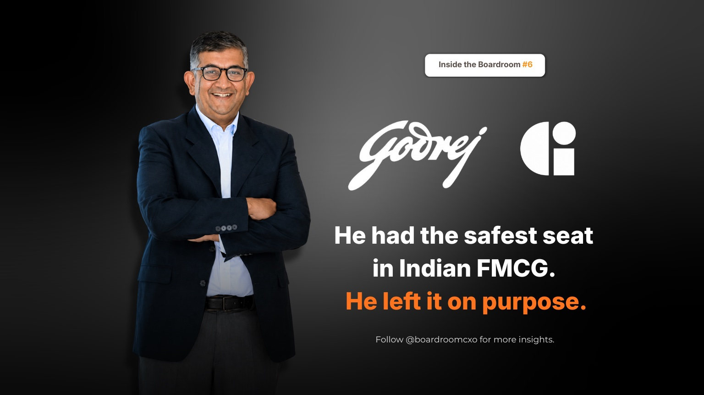

Sudhir Sitapati had the safest seat in Indian FMCG. Two decades inside Hindustan Unilever, brand thinking on Surf Excel and Brooke Bond that competitors still study, a lead role in the roughly $5 billion merger that brought Horlicks into HUL, and a spot on the management committee as one of its youngest ever executive directors. He had even written the book on how HUL builds leaders like him, literally, called The CEO Factory.
In 2021, he walked away from all of it. Not for a bigger company. For Godrej Consumer Products, a business less than a third HUL's size, mid-restructuring, with none of HUL's operating polish. From the outside, it read like a downgrade. It was the opposite.
Who Is Sudhir Sitapati?
Sudhir Sitapati is the MD and CEO of Godrej Consumer Products (GCPL). Before that, he spent roughly twenty years at Hindustan Unilever, building the category and brand strategy behind Surf Excel and Brooke Bond, and sitting at the center of the deal that folded GSK's Horlicks business into HUL, one of the largest FMCG transactions India has recorded. He rose to HUL's management committee as one of its youngest ever executive directors, a track record that made him a serious internal candidate for the top job.
He also wrote The CEO Factory, a book that reverse-engineers exactly how HUL manufactures senior leaders better than almost any company in India. Then, in 2021, he left to run one himself, at a company with none of HUL's institutional scaffolding to lean on.
What Did He Actually Do at Godrej Consumer?
The turnaround was not loud. Sitapati cut a bloated product range instead of adding to it, sharpened GCPL's portfolio around health and beauty, and backed category creation over the kind of quick wins that flatter a quarterly slide. In the international business, he fixed markets one at a time rather than chasing scale everywhere simultaneously, a slower, harder discipline than the growth-at-any-cost playbook most FMCG turnarounds default to.
The results arrived on a delay, which is exactly how real operating fixes tend to show up. For the year ending March 2026, Godrej Consumer crossed ₹15,000 crore in revenue with double-digit volume growth, and the board responded with a fresh five-year term rather than a search for his replacement.
The Boardroom Lesson Most Career Profiles Miss
Most coverage of this move reads as a career-risk story: safe job, risky bet, bet paid off. What gets skipped is the actual mechanism. Sitapati had spent two decades studying, and writing about, how a well-run system produces leaders. The move to Godrej was the test of whether he could produce results without that system underneath him, using judgment instead of institutional scaffolding.
That is precisely the test boards are unable to run in an interview. A candidate's track record inside a well-oiled machine tells you the machine works. It tells you almost nothing about what the candidate contributes once the machine is gone.
A book of theories is worth nothing until you are the one who has to run the company.
Common Mistakes Boards Make With Insider Candidates
Boards evaluating a strong internal candidate for a CEO or MD role tend to make the same three errors.
They mistake tenure at a well-run company for individual capability. A candidate who has spent a career inside an organization with excellent systems, deep bench strength, and a proven playbook may be excellent, or may simply be well supported. The distinction only shows up when that person is asked to build the scaffolding themselves, not inherit it.
They treat "smaller company" as a downgrade rather than a different kind of test. A larger, more prestigious mandate is not automatically the harder job. Running a smaller, messier organization through a restructuring, with less capital and less institutional muscle memory, frequently demands more judgment per decision than a bigger seat with more support around it.
They underweight candidates who choose difficulty on purpose. Someone who leaves a comfortable, high-visibility track to take on a harder, less certain mandate has already answered the question every board eventually needs answered: does this person want the job, or the title.
A Framework for Evaluating This Kind of Move
When we brief boards on a CXO search involving a candidate with a similar profile, insider expertise from a category leader, we push for three specific checks.
- Separate the system's track record from the candidate's. Ask what this person built or fixed personally, distinct from what the organization's existing playbook would have produced with anyone competent in the seat.
- Ask what they cut, not just what they launched. Sitapati's actual turnaround lever at Godrej was subtraction, a narrower portfolio, sharper focus, fewer markets chased at once. Addition is the easy, visible move. Subtraction under pressure is the harder signal.
- Look at the size and shape of the bet they chose. A candidate who consistently picks the harder, less certain option when a safer one is available has a decision-making pattern worth more than any single résumé line.
Why This Belongs in the Boardroom, Not Just the Business Pages
This is the same underlying test we wrote about in Sanjiv Mehta's decade running HUL, where the discipline that mattered most was not the headline growth number but the specific governance habit installed underneath it. Sitapati's story is the inverse case: a leader who left the system that built him to prove the judgment was his own, not the organization's. Both point to the same hiring problem for boards.
The market does not reward the most polished résumé or the most prestigious former employer. It rewards boards that can tell the difference between a candidate who thrived inside a great system and one who can build the next one from scratch.
Frequently Asked Questions
Who is Sudhir Sitapati?
Sudhir Sitapati is the MD and CEO of Godrej Consumer Products (GCPL). He spent roughly two decades at Hindustan Unilever, where he built the brand strategy behind Surf Excel and Brooke Bond, played a key role in the merger that brought Horlicks into HUL, and became one of the youngest ever executive directors on HUL's management committee. He also wrote The CEO Factory, a book on how HUL builds senior leaders.
Why did Sudhir Sitapati leave Hindustan Unilever?
In 2021, Sudhir Sitapati left HUL, where he was widely seen as next in line for the top job, to become MD and CEO of Godrej Consumer Products, a company less than a third HUL's size that had just gone through a significant restructuring. He has framed the move as the difference between writing about leadership theory and being the one accountable for running the company.
What did Sudhir Sitapati do at Godrej Consumer Products?
At Godrej Consumer Products, Sudhir Sitapati cut a bloated product range down to a sharper portfolio focused on health and beauty, prioritized category creation over short-term wins, and rebuilt the international business market by market instead of chasing scale everywhere at once.
What is The CEO Factory by Sudhir Sitapati about?
The CEO Factory is Sudhir Sitapati's book on how Hindustan Unilever systematically develops senior leaders, examining the specific practices, postings, and disciplines that turn young managers into CEOs across Indian and global consumer companies.
How has Godrej Consumer performed under Sudhir Sitapati?
For the year ending March 2026, Godrej Consumer Products crossed ₹15,000 crore in revenue with double-digit volume growth under Sudhir Sitapati, and the board renewed his mandate with a fresh five-year term.
Related Reading
Sanjiv Mehta: The HUL Leader Who Never Forgot Bhopal
Read → R · 02 Founder Leadership · July 2026Refused to Blink: The Boardroom Lesson Behind Marico's War With Hindustan Lever
Read → R · 03 Founder Leadership · July 2026Shailesh Jejurikar: P&G's First Indian-Origin CEO in 187 Years
Read →Looking for a leader who can build the system, not just run inside one?
We screen for candidates who have actually built and fixed, not just inherited a well-run machine. Brief us on your next CXO mandate and we will tell you what the market actually has to offer.
Brief Us on a Mandate